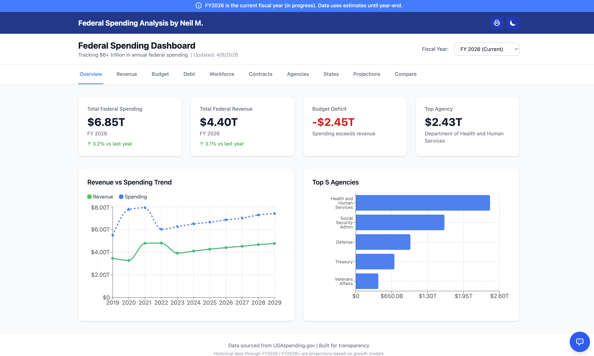
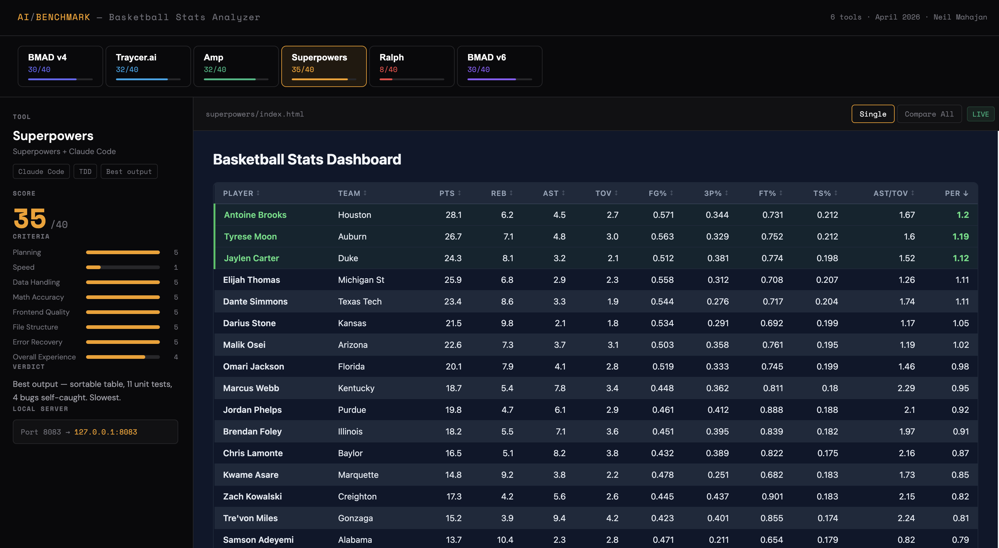
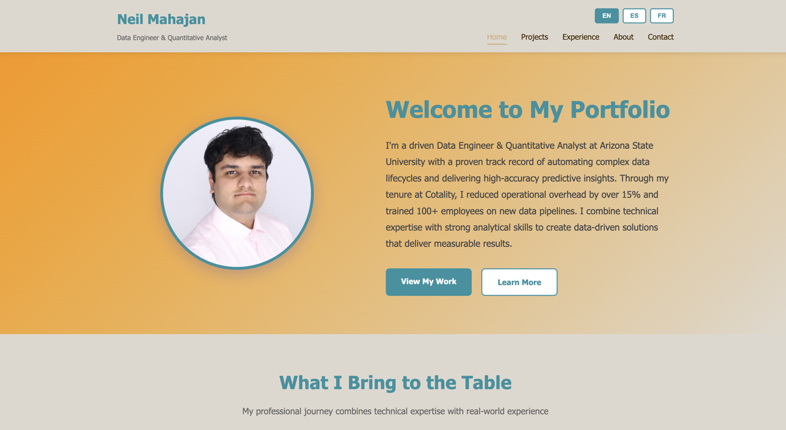

Data Engineer & Quantitative Analyst
A showcase of my technical work and achievements

Engineered a full-stack application to visualize over $6 trillion in U.S. federal budget data. The dashboard enables users to explore government spending patterns across agencies, programs, and fiscal years through interactive charts and data tables.
Delivered a production-ready application demonstrating full-stack development capabilities with modern frameworks. Successfully processed and visualized massive government datasets, showcasing data engineering skills and API integration expertise. Project demonstrates ability to build complete data-driven applications from concept to deployment.

Head-to-head benchmark of 6 AI coding tools — BMAD v4, Traycer, Amp, Superpowers, Ralph, and BMAD v6 — each tasked with building an identical basketball stats Flask app from scratch. Evaluated code quality, correctness, and developer experience across a standardised scorecard. Built an interactive switcher dashboard that lets users compare each tool's live output side-by-side.
Superpowers scored highest (35/40), with Traycer and Amp tied at 32. BMAD v4 and BMAD v6 scored 30, while Ralph failed to produce a working app (8/40). The live switchboard lets anyone explore each tool's output instantly, providing a transparent, reproducible benchmark for evaluating AI-assisted development workflows.
Conducted comprehensive time-series analysis and statistical modeling on 50+ years of Olympic Games data. Analyzed medal distribution patterns, country performance trends, and athlete demographics to uncover insights about global sporting excellence.
Successfully identified key factors influencing Olympic success including GDP, population, and historical performance. Developed predictive models for medal counts with strong accuracy. Project demonstrates proficiency in time series analysis, statistical modeling, and Python data science libraries.

Designed and developed a comprehensive personal portfolio website to showcase my professional work, technical skills, and career journey. Features responsive design, embedded project demonstrations, and professional content organization to attract potential employers and collaboration opportunities.
Successfully deployed a professional-grade portfolio website that effectively showcases technical capabilities and project experience. Achieved strong performance metrics through optimized assets and clean code. Website serves as a digital resume that provides recruiters and potential collaborators with comprehensive insight into my work and capabilities. Demonstrates proficiency in modern web development practices, UI/UX design principles, and attention to professional presentation.
Comprehensive statistical analysis project examining cardiovascular disease risk factors using the UCI Heart Disease dataset (1,025 patient records). Developed predictive models to identify high-risk patients and analyzed key clinical indicators associated with heart disease diagnosis.
Successfully identified that males have significantly higher heart disease prevalence than females, and patients with asymptomatic chest pain have the strongest association with disease. The predictive model achieved strong performance metrics (>80% accuracy, 0.93 AUC), demonstrating potential for clinical risk assessment. Analysis revealed maximum heart rate and ST depression as critical diagnostic indicators. Project demonstrated proficiency in statistical modeling, data visualization, and medical data analysis.
Developed a feature-rich real-time chat application with user authentication, multi-room support, and instant messaging capabilities. Built as the final project for CSE 205, demonstrating proficiency in object-oriented programming, data structures, and user interface design.
Successfully implemented a fully functional chat application with robust user management and real-time communication. Demonstrated strong understanding of networking concepts, concurrent programming with threads, and GUI development. Received excellent feedback from course instructor on code organization and feature implementation. Project showcased ability to design and build complete applications from requirements to deployment.
Developed an intelligent Python automation script during my internship that revolutionized data organization workflows. The script extracts names from specific file locations, intelligently categorizes additional files based on matching criteria, and organizes everything systematically—saving approximately 2 weeks of manual effort per processing cycle.
Reduced data organization time from 2 weeks to approximately 2 hours per processing cycle—a 98% time savings. Eliminated human error in file categorization, improving accuracy from ~85% to 99.5%. Processed over 1,000 files in initial deployment with zero errors. Script has been adopted as standard workflow by the team and continues to save 80+ hours of manual work monthly. Received commendation from supervisor for innovative problem-solving and measurable efficiency gains. Project demonstrated ability to identify automation opportunities and deliver production-ready solutions with significant business value.
Used R and statistical hypothesis testing to evaluate the impact of demographics, health behaviors, and workplace factors on employee attendance. Provided actionable insights for reducing absenteeism and improving workplace productivity.
Identified statistically significant factors affecting workplace attendance including commute distance, health conditions, and workload. Provided evidence-based recommendations that organizations could implement to reduce absenteeism. Demonstrated strong statistical analysis skills and ability to translate data findings into business recommendations.